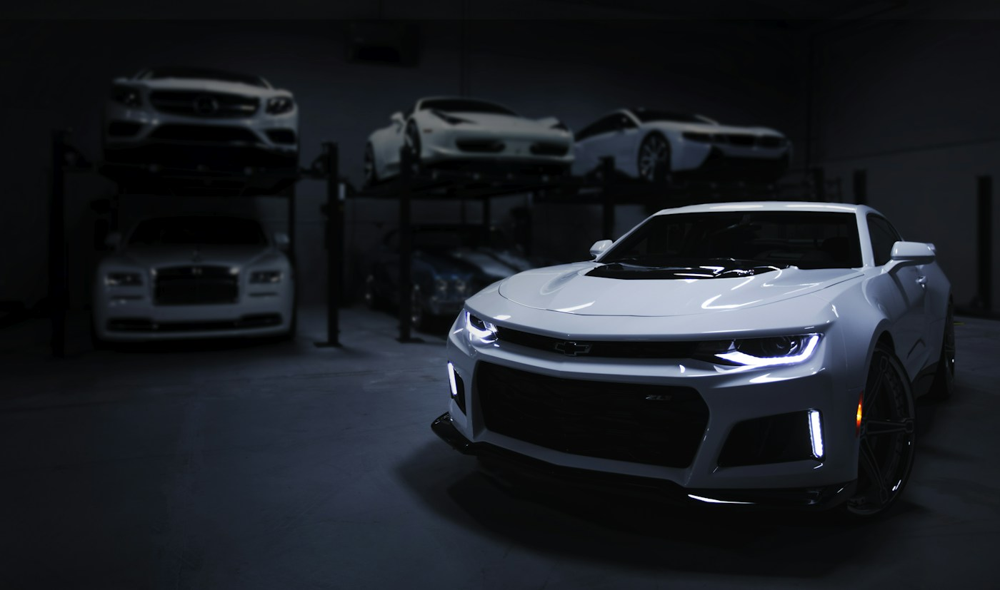

Lavagem técnica
Higienização externa com atenção a superfícies e acabamentos.
ESTÉTICA AUTOMOTIVA / CONCEITO
Cuidado no detalhe para quem gosta de dirigir, olhar e sentir o carro bem apresentado. Descubra o caminho ideal para uma avaliação.
01 / A FILOSOFIA
Estética automotiva merece ser explicada tão bem quanto executada. Esta experiência mostra serviços, etapas e critérios sem transformar tudo em um pacote genérico.
02 / O QUE ENTRA EM CENA
Serviços ilustrativos. Estado do veículo, técnica, materiais, duração e preço dependem de avaliação real.
Higienização externa com atenção a superfícies e acabamentos.
Limpeza e cuidado de materiais, conforme necessidade do veículo.
Opções de acabamento avaliadas com base na condição da pintura.
03 / EXPLORAÇÃO VISUAL
Um controle visual para demonstrar como uma página pode revelar detalhes do carro. Os dois lados usam a mesma foto com tratamentos de cor; não representam resultado de serviço.

TRATAMENTO CLAROTRATAMENTO ESCUROSimulação de interface. Resultados de estética automotiva variam conforme o veículo e o serviço.
04 / UM PROCESSO CLARO
Entender pintura, interior, uso e prioridades antes de sugerir um serviço.
Alinhar escopo, técnica, tempo e orçamento com transparência.
Revisar o resultado e orientar os cuidados seguintes.
05 / MONTE UMA CONSULTA
Selecione foco e tipo de veículo para preparar uma mensagem de avaliação. A demo não agenda nem envia informações.
VERNIZ / ESTUDO CONCEITUAL
Uma proposta digital para negócios de estética automotiva explicarem seu trabalho, mostrarem processo e receberem consultas melhores.
Preparar consulta ↑